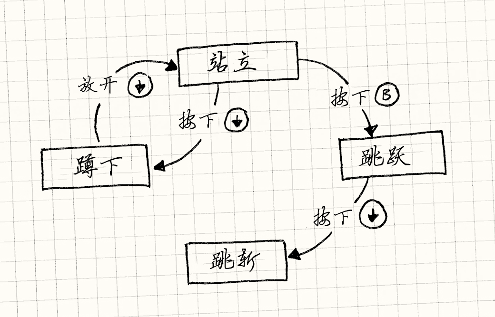
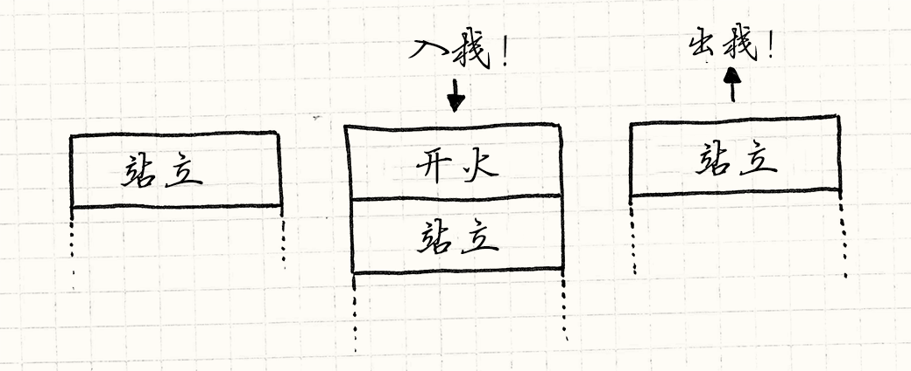

状态
游戏设计模式Design Patterns Revisited
Confession time: I went a little overboard and packed way too much into this chapter. It’s ostensibly about the State design pattern, but I can’t talk about that and games without going into the more fundamental concept of finite state machines (or “FSMs”). But then once I went there, I figured I might as well introduce hierarchical state machines and pushdown automata.
忏悔时间：我有些越界，将太多的东西打包到了这章中。 它表面上关于状态模式，但我无法只讨论它和游戏，而不涉及更加基础的有限状态机（FSMs）。 但是一旦讲了那个，我发现也想要介绍层次状态机和下推自动机。
That’s a lot to cover, so to keep things as short as possible, the code samples here leave out a few details that you’ll have to fill in on your own. I hope they’re still clear enough for you to get the big picture.
有很多要讲，我会尽可能简短，这里的示例代码留下了一些你需要自己填补 的细节。 我希望它们仍然足够清晰的让你获取一份全景图。
Don’t feel sad if you’ve never heard of a state machine. While well known to AI and compiler hackers, they aren’t that familiar to other programming circles. I think they should be more widely known, so I’m going to throw them at a different kind of problem here.
如果你从来没有听说过状态机，不要难过。 虽然在AI和编译器程序员界很知名，在其他编程圈就没那么知名了。 我认为应该有更多人知道它，所以我在这里将其运用在不同的问题。
We’ve All Been There
感同身受
We’re working on a little side-scrolling platformer. Our job is to implement the heroine that is the player’s avatar in the game world. That means making her respond to user input. Push the B button and she should jump. Simple enough:
我们在完成一个卷轴平台游戏。 工作是实现玩家在游戏世界中操作的女英雄。 这就意味着她需要对玩家的输入做出响应。按B键她应该跳跃。简单实现如下：
void Heroine::handleInput(Input input) { if (input == PRESS_B) { yVelocity_ = JUMP_VELOCITY; setGraphics(IMAGE_JUMP); } }
Spot the bug?
看到漏洞了吗？
There’s nothing to prevent “air jumping” — keep hammering B while she’s in the
air, and she will float forever. The simple fix is to
add an isJumping_ Boolean field to Heroine that tracks when she’s jumping,
and then do:
没有东西阻止“空气跳”——在她空中时狂按B，她就会浮空。
简单的修复方法是给Heroine增加isJumping_布尔字段，追踪它跳跃的状态。然后这样做：
void Heroine::handleInput(Input input) { if (input == PRESS_B) { if (!isJumping_) { isJumping_ = true; // Jump... } } }
Next, we want the heroine to duck if the player presses down while she’s on the ground and stand back up when the button is released:
下面，当玩家按下键时，我们想要她在地上时卧倒，而松开下键的时候站起来：
void Heroine::handleInput(Input input) { if (input == PRESS_B) { // Jump if not jumping... } else if (input == PRESS_DOWN) { if (!isJumping_) { setGraphics(IMAGE_DUCK); } } else if (input == RELEASE_DOWN) { setGraphics(IMAGE_STAND); } }
Spot the bug this time?
这次看到了错误了吗？
With this code, the player could:
- Press down to duck.
- Press B to jump from a ducking position.
- Release down while still in the air.
用这个代码，玩家可以：
- 按下键卧倒。
- 按B从卧倒状态跳起。
- 在空中放开下键。
The heroine will switch to her standing graphic in the middle of the jump. Time for another flag…
英雄会在跳跃的半路上变成站立图片。是时候增加另一个标识了……
void Heroine::handleInput(Input input) { if (input == PRESS_B) { if (!isJumping_ && !isDucking_) { // Jump... } } else if (input == PRESS_DOWN) { if (!isJumping_) { isDucking_ = true; setGraphics(IMAGE_DUCK); } } else if (input == RELEASE_DOWN) { if (isDucking_) { isDucking_ = false; setGraphics(IMAGE_STAND); } } }
Next, it would be cool if the heroine did a dive attack if the player presses down in the middle of a jump:
下面，如果玩家在跳跃途中按下下键，英雄能够做速降攻击就太酷了：
void Heroine::handleInput(Input input) { if (input == PRESS_B) { if (!isJumping_ && !isDucking_) { // Jump... } } else if (input == PRESS_DOWN) { if (!isJumping_) { isDucking_ = true; setGraphics(IMAGE_DUCK); } else { isJumping_ = false; setGraphics(IMAGE_DIVE); } } else if (input == RELEASE_DOWN) { if (isDucking_) { // Stand... } } }
Bug hunting time again. Find it?
又是检查漏洞的时间了。找到了吗？
We check that you can’t air jump while jumping, but not while diving. Yet another field…
我们检查了跳跃时不能做空气跳，但是速降时没有。又是另一个字段……
Something is clearly wrong with our approach. Every time we touch this handful of code, we break something. We need to add a bunch more moves — we haven’t even added walking yet — but at this rate, it will collapse into a heap of bugs before we’re done with it.
我们的实现方法有很明显的错误。 每次我们改动代码时，就破坏了什么东西。 需要增加更多动作——行走都还没有加入呢——但以这种速度，完成之前就会遇到一堆错误。
Finite State Machines to the Rescue
有限状态机前来救援
In a fit of frustration, you sweep everything off your desk except a pen and paper and start drawing a flowchart. You draw a box for each thing the heroine can be doing: standing, jumping, ducking, and diving. When she can respond to a button press in one of those states, you draw an arrow from that box, label it with that button, and connect it to the state she changes to.
在挫败之后，你把桌子一扫而空，只留下纸笔开始画流程图。 你给英雄每件能做的事情都画了一个盒子：站立，跳跃，俯卧，速降。 当她在这些状态中能响应按键时，你从那个盒子画出一个箭头，标记上按键，然后连接到她改变到的状态。

Congratulations, you’ve just created a finite state machine. These came out of a branch of computer science called automata theory whose family of data structures also includes the famous Turing machine. FSMs are the simplest member of that family.
祝贺，你刚刚建好了一个有限状态机。 它来自计算机科学的分支自动理论，那里有很多著名的数据结构，包括著名的图灵机。 FSMs是其中最简单的成员。
The gist is:
要点是：
-
You have a fixed set of states that the machine can be in. For our example, that’s standing, jumping, ducking, and diving.
-
你有机器可以处于的固定数量的状态集合。在我们的例子中，是站立，跳跃，俯卧和速降。
-
The machine can only be in one state at a time. Our heroine can’t be jumping and standing simultaneously. In fact, preventing that is one reason we’re going to use an FSM.
-
机器同时只能在一个状态。英雄不可能同时处于跳跃和站立。事实上，防止这点是使用FSM的理由之一。
-
A sequence of inputs or events is sent to the machine. In our example, that’s the raw button presses and releases.
-
一连串的输入或事件被发送给机器。在我们的例子中，就是按键按下和松开。
-
Each state has a set of transitions, each associated with an input and pointing to a state. When an input comes in, if it matches a transition for the current state, the machine changes to the state that transition points to.
-
每个状态都有一系列的转换，转换与输入和另一状态相关。当输入进来，如果它与当前状态的某个转换匹配，机器转为转换所指的状态。
For example, pressing down while standing transitions to the ducking state. Pressing down while jumping transitions to diving. If no transition is defined for an input on the current state, the input is ignored.
举个例子，在站立状态时，按下下键转换为俯卧状态。在跳跃时按下下键转换为速降。如果输入在当前状态没有定义转换，输入就被忽视。
In their pure form, that’s the whole banana: states, inputs, and transitions. You can draw it out like a little flowchart. Unfortunately, the compiler doesn’t recognize our scribbles, so how do we go about implementing one? The Gang of Four’s State pattern is one method — which we’ll get to — but let’s start simpler.
在它们的核心，这就是全部了：状态，输入，和转换。 你可以用一张流程图把它画出来。不幸的是，编译器不认我们的画， 所以我们如何实现一个？ GoF的状态模式是一个方法——我们会谈到的——但先从简单的开始。
Enums and Switches
枚举和分支
One problem our Heroine class has is some combinations of those Boolean fields
aren’t valid: isJumping_ and isDucking_ should never both be true, for
example. When you have a handful of flags where only one is true at a time,
that’s a hint that what you really want is an enum.
我们Heroine类的问题来自将布尔字段不合法的绑在了一起：
isJumping_和isDucking_，不会同时为真。
但有些标识同时只有一个是true，提示是你真正需要的其实是enum。
In this case, that enum is exactly the set of states for our FSM, so let’s
define that:
在这个例子中 enum就是FSM的状态的集合，所以让我们定义它：
enum State { STATE_STANDING, STATE_JUMPING, STATE_DUCKING, STATE_DIVING };
Instead of a bunch of flags, Heroine will just have one state_ field. We
also flip the order of our branching. In the previous code, we switched on
input, then on state. This kept the code for handling one button press
together, but it smeared around the code for one state. We want to keep that
together, so we switch on state first. That gives us:
不用一堆标识，Heroine只有一个state_状态。
我们同样改变了分支顺序。在前面的代码中，我们先在输入上做分支，然后是状态。
这让代码统一处理某个按键，但一个状态分布到了代码各处。
我们想让它们聚在一起，所以先对状态做分支。这样的话：
void Heroine::handleInput(Input input) { switch (state_) { case STATE_STANDING: if (input == PRESS_B) { state_ = STATE_JUMPING; yVelocity_ = JUMP_VELOCITY; setGraphics(IMAGE_JUMP); } else if (input == PRESS_DOWN) { state_ = STATE_DUCKING; setGraphics(IMAGE_DUCK); } break; case STATE_JUMPING: if (input == PRESS_DOWN) { state_ = STATE_DIVING; setGraphics(IMAGE_DIVE); } break; case STATE_DUCKING: if (input == RELEASE_DOWN) { state_ = STATE_STANDING; setGraphics(IMAGE_STAND); } break; } }
This seems trivial, but it’s a real improvement over the previous code. We still have some conditional branching, but we simplified the mutable state to a single field. All of the code for handling a single state is now nicely lumped together. This is the simplest way to implement a state machine and is fine for some uses.
这看起来很琐碎，但是比起前面的代码是一个很大的进步了。 我们仍有条件分支，但简化了变化状态，将其变成了字段。 处理同一状态的所有代码都聚到了一起。 这是实现状态机最简单的方法，对于某些使用情况也不错。
Your problem may outgrow this solution, though. Say we want to add a move where our heroine can duck for a while to charge up and unleash a special attack. While she’s ducking, we need to track the charge time.
但是，你的问题也许超过了这个解法的控制。 假设我们想增加动作，我们的英雄可以速降一段时间来充能，之后释放一次特殊攻击。 当她速降时，我们需要追踪它的充能时间。
We add a chargeTime_ field to Heroine to store how long the attack has
charged. Assume we already have an update() that
gets called each frame. In there, we add:
我们为Heroine添加了chargeTime_字段，保存攻击充能的时间大小。
假设我们已经有一个每帧都会调用的update()方法。在那里，我们添加：
void Heroine::update() { if (state_ == STATE_DUCKING) { chargeTime_++; if (chargeTime_ > MAX_CHARGE) { superBomb(); } } }
We need to reset the timer when she starts ducking, so we modify
handleInput():
我们需要在她开始速降的时候重置计时器，所以我们修改handleInput()：
void Heroine::handleInput(Input input) { switch (state_) { case STATE_STANDING: if (input == PRESS_DOWN) { state_ = STATE_DUCKING; chargeTime_ = 0; setGraphics(IMAGE_DUCK); } // Handle other inputs... break; // Other states... } }
All in all, to add this charge attack, we had to modify two methods and add a
chargeTime_ field onto Heroine even though it’s only meaningful while in
the ducking state. What we’d prefer is to have all of that code and data nicely
wrapped up in one place. The Gang of Four has us covered.
总而言之，为了增加这个充能攻击，我们需要修改两个方法，
添加一个chargeTime_字段到Heroine，哪怕它只在速降时有意义。
我们更喜欢的是让所有的代码和数据都待在同一个地方。GoF完成了这个。
The State Pattern
状态模式
For people deeply into the object-oriented mindset, every conditional branch is an opportunity to use dynamic dispatch (in other
words a virtual method call in C++). I think you can go too far down that
rabbit hole. Sometimes an if is all you need.
对于那些深深沉浸在面向对象思维方式的人，每个条件分支都是使用动态分配的机会（在C++中叫做虚方法调用）。
我觉得那就在兔子洞里挖得太深了。有时候一个if就能满足你的需要了。
But in our example, we’ve reached a tipping point where something object-oriented is a better fit. That gets us to the State pattern. In the words of the Gang of Four:
但是在我们的例子中，我们抵达了面向对象更好的转折点。 这带领我们走向状态模式。在GoF中这样描述：
Allow an object to alter its behavior when its internal state changes. The object will appear to change its class.
允许对象在当内部状态改变时改变其行为。就好像对象改变了自己的类一样。
That doesn’t tell us much. Heck, our switch does that. The concrete pattern
they describe looks like this when applied to our heroine:
这可没太多帮助。我们的switch也完成了这一点。
它们描述的东西应用在我们的英雄身上是这样的：
A state interface
一个状态接口
First, we define an interface for the state. Every bit of behavior that is
state-dependent — every place we had a switch before — becomes a virtual
method in that interface. For us, that’s handleInput() and update():
首先，我们为状态定义接口。
状态相关的行为——我们之前用switch的每一处——成为了接口中的虚方法。
对于我们来说，那是handleInput()和update()：
class HeroineState { public: virtual ~HeroineState() {} virtual void handleInput(Heroine& heroine, Input input) {} virtual void update(Heroine& heroine) {} };
Classes for each state
为每个状态写类
For each state, we define a class that implements the interface. Its methods
define the heroine’s behavior when in that state. In other words, take each case
from the earlier switch statements and move them into their state’s class. For example:
对于每个状态，我们定义一个类实现接口。它的方法定义了英雄在状态的行为。
换言之，从之前的switch中取出每个case，将它们移动到状态类中。举个例子：
class DuckingState : public HeroineState { public: DuckingState() : chargeTime_(0) {} virtual void handleInput(Heroine& heroine, Input input) { if (input == RELEASE_DOWN) { // Change to standing state... heroine.setGraphics(IMAGE_STAND); } } virtual void update(Heroine& heroine) { chargeTime_++; if (chargeTime_ > MAX_CHARGE) { heroine.superBomb(); } } private: int chargeTime_; };
Note that we also moved chargeTime_ out of Heroine and into the DuckingState
class. This is great — that piece of data is only meaningful while in that state,
and now our object model reflects that explicitly.
注意我们也将chargeTime_移出了Heroine，放到了DuckingState类中。
这很好——那部分数据只在这个状态有用，现在我们的对象模型直接反映了这一点。
Delegate to the state
状态委托
Next, we give the Heroine a pointer to her current state, lose each big switch, and delegate to the state instead:
然后，我们给Heroine指向她的当前状态的指针，放弃巨大的switch，转而委托给状态。
class Heroine { public: virtual void handleInput(Input input) { state_->handleInput(*this, input); } virtual void update() { state_->update(*this); } // Other methods... private: HeroineState* state_; };
In order to “change state”, we just need to assign state_ to point to a
different HeroineState object. That’s the State pattern in its entirety.
为了“改变状态”，我们只需要将state_声明指向不同的HeroineState对象。
这就是状态模式的整体。
Where Are the State Objects?
状态对象在哪里？
I did gloss over one bit here. To change states, we need to assign state_ to
point to the new one, but where does that object come from? With our enum
implementation, that was a no-brainer — enum values are primitives like
numbers. But now our states are classes, which means we need an actual instance
to point to. There are two common answers to this:
我这里掩盖了一点。为了改变状态，我们需要声明state_指向新的，
但那个对象又是从哪里来呢？
在enum实现中，这都不用过脑子——enum实际上就像数字一样。
但是现在状态是类了，意味着我们需要指向实例。通常这有两种回答：
Static states
静态状态
If the state object doesn’t have any other fields, then the only data it stores is a pointer to the internal virtual method table so that its methods can be called. In that case, there’s no reason to ever have more than one instance of it. Every instance would be identical anyway.
如果状态对象没有其他字段， 那么它存储的唯一数据就是指向虚方法表的指针，这样可以调用它的方法。 在这种情况下，没理由产生多个实例。毕竟每个实例都完全一样。
In that case, you can make a single static instance. Even if you have a bunch of FSMs all going at the same time in that same state, they can all point to the same instance since it has nothing machine-specific about it.
在那种情况下，你可以用一个静态实例。 哪怕你有一堆FSM同时在同一状态上运行，它们都能接触到同一实例，因为没有状态机特定的部分。
Where you put that static instance is up to you. Find a place that makes sense. For no particular reason, let’s put ours inside the base state class:
在哪里放置静态实例取决于你。找一个合理的地方。 没什么特殊的理由，把我们的放在状态基类中。
class HeroineState { public: static StandingState standing; static DuckingState ducking; static JumpingState jumping; static DivingState diving; // Other code... };
Each of those static fields is the one instance of that state that the game uses. To make the heroine jump, the standing state would do something like:
每个静态字段都是游戏状态的一个实例。为了让英雄跳跃，站立状态会做些这样的事情：
if (input == PRESS_B) { heroine.state_ = &HeroineState::jumping; heroine.setGraphics(IMAGE_JUMP); }
Instantiated states
实例化状态
Sometimes, though, this doesn’t fly. A static state won’t work for the ducking
state. It has a chargeTime_ field, and that’s specific to the heroine that
happens to be ducking. This may coincidentally work in our game if there’s only
one heroine, but if we try to add two-player co-op and have two heroines on
screen at the same time, we’ll have problems.
有时，没那么容易。静态状态对俯卧不起作用。
它有一个chargeTime_字段，与正在俯卧的英雄特定相关。
在游戏中如果只有一个英雄那也能工作，但是如果我们要添加双人合作，同时在屏幕上有两个英雄，我们就遇到麻烦了。
In that case, we have to create a state
object when we transition to it. This lets each FSM have its own instance of the state. Of course, if we’re allocating a new state, that means we need to free the current one. We have to be careful here, since the code that’s triggering the change is in a method in the current state. We don’t want to delete this out from under ourselves.
在那种情况下，转换时需要创建状态对象。
这让每个FSM拥有它自己的状态实例。当然，如果我们分配新状态，
那意味着我们需要释放当前的。
在这里要小心，由于触发变化的代码是当前状态中的方法。我们不想自己删除this。
Instead, we’ll allow handleInput() in HeroineState to optionally return a new state. When it does, Heroine will delete the old one and swap in the new one, like so:
相反，我们允许HeroineState中的handleInput()随机的返回一个新状态。
如果它那么做了，Heroine会删除旧的，然后换成新的，就像这样：
void Heroine::handleInput(Input input) { HeroineState* state = state_->handleInput(*this, input); if (state != NULL) { delete state_; state_ = state; } }
That way, we don’t delete the previous state until we’ve returned from its method. Now, the standing state can transition to ducking by creating a new instance:
这样，我们直到从之前的状态返回，才需要删除它。 现在，站立状态可以通过创建一个新实例转换为俯卧状态：
HeroineState* StandingState::handleInput(Heroine& heroine, Input input) { if (input == PRESS_DOWN) { // Other code... return new DuckingState(); } // Stay in this state. return NULL; }
When I can, I prefer to use static states since they don’t burn memory and CPU cycles allocating objects each state change. For states that are more, uh, stateful, though, this is the way to go.
如果可以，我倾向于使用静态状态，因为它们不会在状态转换时消耗太多的内存和CPU。 但是，对于更多的状态，额，多状态的，这是一条可选的路。
Enter and Exit Actions
入口行为和退出行为
The goal of the State pattern is to encapsulate all of the behavior and data for one state in a single class. We’re partway there, but we still have some loose ends.
状态模式的目标是将状态的行为和数据封装到单一类中。 我们部分的完成了这一点，但是还有一些未了之事。
When the heroine changes state, we also switch her sprite. Right now, that code is owned by the state she’s switching from. When she goes from ducking to standing, the ducking state sets her image:
当英雄改变状态，我们也改变她的图片。 现在，那部分代码在她转换前的状态上。 当她从俯卧转为站立，俯卧状态设置了她的图片：
HeroineState* DuckingState::handleInput(Heroine& heroine, Input input) { if (input == RELEASE_DOWN) { heroine.setGraphics(IMAGE_STAND); return new StandingState(); } // Other code... }
What we really want is each state to control its own graphics. We can handle that by giving the state an entry action:
我们想做的是每个状态控制她自己的图像。我们可以给状态一个入口行为来实现：
class StandingState : public HeroineState { public: virtual void enter(Heroine& heroine) { heroine.setGraphics(IMAGE_STAND); } // Other code... };
Back in Heroine, we modify the code for handling state changes to call that
on the new state:
在Heroine中，我们修改了处理状态改变的代码，在新的状态上调用：
void Heroine::handleInput(Input input) { HeroineState* state = state_->handleInput(*this, input); if (state != NULL) { delete state_; state_ = state; // Call the enter action on the new state. state_->enter(*this); } }
This lets us simplify the ducking code to:
这让我们将俯卧代码简化为：
HeroineState* DuckingState::handleInput(Heroine& heroine, Input input) { if (input == RELEASE_DOWN) { return new StandingState(); } // Other code... }
All it does is switch to standing and the standing state takes care of the graphics. Now our states really are encapsulated. One particularly nice thing about entry actions is that they run when you enter the state regardless of which state you’re coming from.
它做的所有事情就是转换状态为站立，站立状态控制图形。 现在我们的状态真的封装了。 关于入口行为的好事就是，当你进入状态时，不必关心你是从哪个状态转换来的。
Most real-world state graphs have multiple transitions into the same state. For example, our heroine will also end up standing after she lands a jump or dive. That means we would end up duplicating some code everywhere that transition occurs. Entry actions give us a place to consolidate that.
大多数现实世界的状态图都有从多个转换进入同一个状态。 举个例子，英雄在它跳跃或速降后进入站立状态。 这意味着我们在转换发生的最后复制了相同的代码。 入口行为给了一个好地方来巩固那一点。
We can, of course, also extend this to support an exit action. This is just a method we call on the state we’re leaving right before we switch to the new state.
我们能，当然，扩展并支持离开行为。 这是在我们离开现有状态，转换到新状态之前调用的方法。
What’s the Catch?
有什么收获？
I’ve spent all this time selling you on FSMs, and now I’m going to pull the rug out from under you. Everything I’ve said so far is true, and FSMs are a good fit for some problems. But their greatest virtue is also their greatest flaw.
我花了这么长时间向您推销FSMs，现在我要从你脚下抽走地毯了。 我到现在讲的都是真的，FSM能很好解决一些问题。但它们最大的优点也是它们最大的缺点。
State machines help you untangle hairy code by enforcing a very constrained structure on it. All you’ve got is a fixed set of states, a single current state, and some hardcoded transitions.
状态机通过使用有约束的结构来理清杂乱的代码。 你得到的是固定状态集合，单一的当前状态，和一些硬编码的转换。
If you try using a state machine for something more complex like game AI, you will slam face-first into the limitations of that model. Thankfully, our forebears have found ways to dodge some of those barriers. I’ll close this chapter out by walking you through a couple of them.
如果你需要为更复杂的东西，比如游戏AI使用状态机，你的脸会撞到这个模型的限制上。 感谢上天，我们的前辈找到了一些方法来闪避这些障碍。我会浏览一些来结束这一章。
Concurrent State Machines
并发状态机
We’ve decided to give our heroine the ability to carry a gun. When she’s packing heat, she can still do everything she could before: run, jump, duck, etc. But she also needs to be able to fire her weapon while doing it.
我们决定给英雄持枪的能力。 当她拿着枪的时候，她还是能做她之前的任何事情：跑，跳，速降，等等。 但是她也需要在做这些的同时能开火。
If we want to stick to the confines of an FSM, we have to double the number of states we have. For each existing state, we’ll need another one for doing the same thing while she’s armed: standing, standing with gun, jumping, jumping with gun, you get the idea.
如果我们绑定在FSM上，我们需要翻倍现有状态。 对于每个现有状态，我们需要另一个她武装状态：站立，持枪站立，跳跃，持枪跳跃， 你知道我的意思。
Add a couple of more weapons and the number of states explodes combinatorially. Not only is it a huge number of states, it’s a huge amount of redundancy: the unarmed and armed states are almost identical except for the little bit of code to handle firing.
多加几种武器，状态就会指数爆炸。 这不但有大量的状态，这也是大量的冗余：武装和非武装状态集合是完全一致的，只是多了一点负责射击的代码。
The problem is that we’ve jammed two pieces of state — what she’s doing and what she’s carrying — into a single machine. To model all possible combinations, we would need a state for each pair. The fix is obvious: have two separate state machines.
问题在于我们将两种状态绑定 ——她做的和她携带的——到了一个状态机上。 为了处理所有可能的结合，我们需要为每一对写一个状态。 修复方法很明显：使用两个单独的状态机。
We keep our original state machine for what she’s doing and leave it alone. Then
we define a separate state machine for what she’s carrying. Heroine will have
two “state” references, one for each, like:
我们保留原来记录她在做什么的状态机，不再管它。
然后定义她携带了什么的单独状态机。
Heroine将会有两个“状态”引用，每个对应一个状态机，就像这样：
class Heroine { // Other code... private: HeroineState* state_; HeroineState* equipment_; };
When the heroine delegates inputs to the states, she hands it to both of them:
当英雄把输入委托给了状态，她两个都会委托：
void Heroine::handleInput(Input input) { state_->handleInput(*this, input); equipment_->handleInput(*this, input); }
Each state machine can then respond to inputs, spawn behavior, and change its state independently of the other machine. When the two sets of states are mostly unrelated, this works well.
每个状态机之后都能响应输入，发生行为，独立于其它机器改变状态。 当两个状态集合几乎没有联系的时候，它的结果不错。
In practice, you’ll find a few cases where the states do interact. For example,
maybe she can’t fire while jumping, or maybe she can’t do a dive attack if she’s
armed. To handle that, in the code for one state, you’ll probably just do some
crude if tests on the other machine’s state to coordinate them. It’s not the most
elegant solution, but it gets the job done.
在实践中，你会发现有些时候状态在交互。
举个例子，也许她在跳跃时不能开火，或者她在武装时不能速降攻击。
为了完成这个，你也许会在状态的代码中做一些粗糙的if测试其他状态来协同，
这不是最优雅的解决方案，但这可以搞定工作。
Hierarchical State Machines
分层状态机
After fleshing out our heroine’s behavior some more, she’ll likely have a bunch of similar states. For example, she may have standing, walking, running, and sliding states. In any of those, pressing B jumps and pressing down ducks.
再充实我们英雄的行为，她可能会有更多相似的状态。 举个例子，她也许有站立，行走，奔跑，和滑铲状态。在每一个中，按B跳，按下蹲。
With a simple state machine implementation, we have to duplicate that code in each of those states. It would be better if we could implement that once and reuse it across all of the states.
通过简单的状态机实现，我们在每个状态中的都重复了代码。 如果我们能够实现一次，在多个状态间重用就好了。
If this was just object-oriented code instead of a state machine, one way to share code across those states would be using inheritance. We could define a class for an “on ground” state that handles jumping and ducking. Standing, walking, running, and sliding would then inherit from that and add their own additional behavior.
如果这是面向对象的代码而不是状态机，在这些状态间分享代码的方式是通过继承。 我们可以为“在地面上”定义一个类处理跳跃和速降。 站立，行走，奔跑和滑铲都会从它继承，然后增加它们的附加行为。
It turns out, this is a common structure called a hierarchical state machine. A state can have a superstate (making itself a substate). When an event comes in, if the substate doesn’t handle it, it rolls up the chain of superstates. In other words, it works just like overriding inherited methods.
你会发现，这是一个被称为分层状态机的通用结构。 状态可以有父状态（这让它变为子状态）。 当一个事件进来，如果子状态没有处理，它就会交给链上的父状态。 换言之，它像重载的继承方法那样运作。
In fact, if we’re using the State pattern to implement our FSM, we can use class inheritance to implement the hierarchy. Define a base class for the superstate:
事实上，如果我们使用状态模式实现FSM，我们可以使用继承来实现层次。 定义一个基类作为父状态：
class OnGroundState : public HeroineState { public: virtual void handleInput(Heroine& heroine, Input input) { if (input == PRESS_B) { // Jump... } else if (input == PRESS_DOWN) { // Duck... } } };
And then each substate inherits it:
每个子状态继承它：
class DuckingState : public OnGroundState { public: virtual void handleInput(Heroine& heroine, Input input) { if (input == RELEASE_DOWN) { // Stand up... } else { // Didn't handle input, so walk up hierarchy. OnGroundState::handleInput(heroine, input); } } };
This isn’t the only way to implement the hierarchy, of course. If you aren’t using the Gang of Four’s State pattern, this won’t work. Instead, you can model the current state’s chain of superstates explicitly using a stack of states instead of a single state in the main class.
这当然不是唯一实现层次的方法。 如果你没有使用GoF的状态模式，这不会有用。 相反，你可以显式的使用状态栈而不是单一状态来表示当前状态的父状态链。
The current state is the one on the top of the stack, under that is its immediate superstate, and then that state’s superstate and so on. When you dish out some state-specific behavior, you start at the top of the stack and walk down until one of the states handles it. (If none do, you ignore it.)
当前状态是栈顶的状态，在他下面是它的直接父状态， 然后是那个状态的父状态，一直下去。 当你发现了一些特定状态的行为，你从栈的顶端开始， 然后向下移动直到某一个状态处理了它。（如果没有，你忽视它。）
Pushdown Automata
下推自动机
There’s another common extension to finite state machines that also uses a stack of states. Confusingly, the stack represents something entirely different, and is used to solve a different problem.
还有一种有限自动机的扩展也用了状态栈。 令人困惑的是，栈表示的是完全不同的事物，被用作解决不同的问题。
The problem is that finite state machines have no concept of history. You know what state you are in, but have no memory of what state you were in. There’s no easy way to go back to a previous state.
问题是有限自动机没有任何历史的概念。 你知道你在什么状态中，但是不记得你曾在什么状态。 没有回到上一状态的简单办法。
Here’s an example: Earlier, we let our fearless heroine arm herself to the
teeth. When she fires her gun, we need a new state that plays the firing
animation and spawns the bullet and any visual effects. So we slap together a
FiringState and make all of the states that she can
fire from transition into that when the fire button is pressed.
这里是个例子：早先，我们让无畏英雄武装到了牙齿。
当她开火时，我们需要新状态播放开火动画，产生子弹和视觉效果。
所以我们拼凑了一个FiringState，让所有状态都能在按下开火按钮时跳转过去。
The tricky part is what state she transitions to after firing. She can pop off a round while standing, running, jumping, and ducking. When the firing sequence is complete, she should transition back to what she was doing before.
有技巧的部分是她开火后转换到的状态。 她可以在站立，奔跑，跳跃，速降时开火。 当开火序列完成了，应该转换为她之前的状态。
If we’re sticking with a vanilla FSM, we’ve already forgotten what state she was in. To keep track of it, we’d have to define a slew of nearly identical states — firing while standing, firing while running, firing while jumping, and so on — just so that each one can have a hardcoded transition that goes back to the right state when it’s done.
如果我们固执于纯粹的FSM，我们就已经忘了她之前所处的状态。 为了继续追踪，我们定义了很多几乎完全一样的类——站立开火，跑步开火，跳跃开火，诸如此类——每个都有硬编码的转换，用来回到刚刚在做的事。
What we’d really like is a way to store the state she was in before firing and then recall it later. Again, automata theory is here to help. The relevant data structure is called a pushdown automaton.
我们真正喜欢的是，它会存储开火前所处的状态，然后之后能回想起来。 又一次，自动理论来帮忙了，相关的数据结构被称为下推自动机。
Where a finite state machine has a single pointer to a state, a pushdown automaton has a stack of them. In an FSM, transitioning to a new state replaces the previous one. A pushdown automaton lets you do that, but it also gives you two additional operations:
有限自动机有一个指针指向状态，下推自动机有一栈指针。 在FSM中，转换到新状态代替了之前的那个。 下推状态机不仅能完成那个，还能给你两个额外操作：
-
You can push a new state onto the stack. The “current” state is always the one on top of the stack, so this transitions to the new state. But it leaves the previous state directly under it on the stack instead of discarding it.
-
你可以将新状态推入栈中。“当前的”状态总是在栈顶，所以这会转到新状态。但它让之前的状态待在栈中而不是销毁它。
-
You can pop the topmost state off the stack. That state is discarded, and the state under it becomes the new current state.
-
你可以弹出最上面的状态。这个状态会被销毁，它下面状态成为新状态。

This is just what we need for firing. We create a single firing state. When the fire button is pressed while in any other state, we push the firing state onto the stack. When the firing animation is done, we pop that state off, and the pushdown automaton automatically transitions us right back to the state we were in before.
这正是我们开火时需要的。我们创建单一开火状态。 当开火按钮在其他状态按下时，我们推入开火状态。 当开火动画结束，我们弹出开火状态，然后下推自动机自动转回我们之前的状态。
So How Useful Are They?
所以它们有多有用呢？
Even with those common extensions to state machines, they are still pretty limited. The trend these days in game AI is more toward exciting things like behavior trees and planning systems. If complex AI is what you’re interested in, all this chapter has done is whet your appetite. You’ll want to read other books to satisfy it.
即使状态机有这些常见的扩展，它们还是很受限制。 这让今日游戏AI移向了更加激动人心的领域，比如行为树和计划系统。 如果你关注复杂AI，这一整章只是勾起了你的食欲。 你需要阅读其他书来满足它。
This doesn’t mean finite state machines, pushdown automata, and other simple systems aren’t useful. They’re a good modeling tool for certain kinds of problems. Finite state machines are useful when:
这不意味着有限自动机，下推自动机，和其他简单的系统无用。 它们是特定问题的好工具。有限自动机在以下情况有用：
-
You have an entity whose behavior changes based on some internal state.
-
你有个实体，它的行为基于一些内在状态。
-
That state can be rigidly divided into one of a relatively small number of distinct options.
-
状态可以被严格的分割为相对较少的不相干项目。
-
The entity responds to a series of inputs or events over time.
-
实体响应一系列输入或事件。
In games, they are most known for being used in AI, but they are also common in implementations of user input handling, navigating menu screens, parsing text, network protocols, and other asynchronous behavior.
在游戏中，它们因在AI中使用而闻名，但是它也常用于其他实现， 比如处理玩家输入，导航菜单界面，分析文字，网络协议以及其他异步行为。